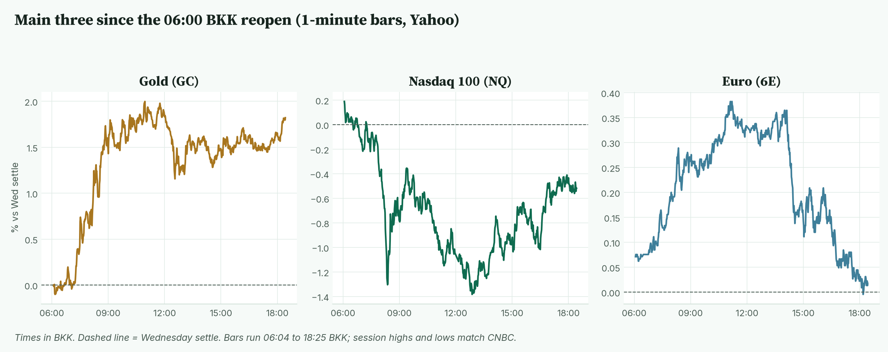
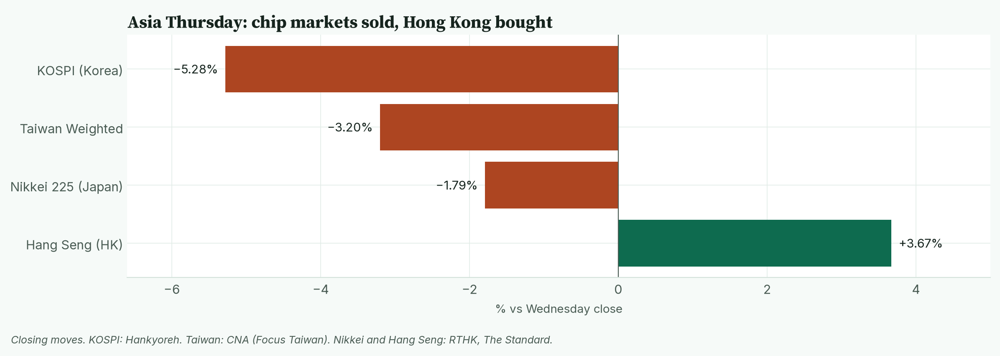

April · Market Intel, pre-NY · Thu Nov 5, 2026 · ~18:40 BKK / ~06:40 New York
Headline: gold futures are up 1.82% at 4,147.2, a two-week high, as yields and oil cool after the Democrats' midterm sweep. Nasdaq futures are down 0.52% on a second day of chip selling. The euro is flat at 1.12440 after giving back its Asian gains.
So what: US jobless claims and labour costs at 20:30 BKK decide whether the "cheaper oil, fewer Fed hikes" story keeps lifting gold, or the dollar's European rebound runs further.
Note: no pre-London brief ran today, so this brief covers everything since Wednesday's US close.
1) Main instruments The three main contracts since the 06:00 BKK reopen, as a % move from Wednesday's settle. Gold jumped in Asia and held; the euro slid back to flat after about 14:30 BKK. |
(Futures quotes are CNBC at 18:25 BKK and match the Yahoo feed. Ranges use Yahoo 1-minute bars from the 06:00 BKK reopen; the first print is 06:04 BKK. Cut at 18:25 BKK. Highs and lows match CNBC.)
- Gold futures (GC, Dec): 4,147.2, +1.82%, at 18:25 BKK. Driver: the dollar, Treasury yields and oil all fell after the midterms, which eases inflation and rate-hike worries (CNBC, Bloomberg via Energy Connects).
- Settle 4,073.0. Range 4,067.0 (06:10 BKK) to 4,155.8 (10:57 BKK). Gold is about 9 points under its session high.
- Spot gold is 4,135.80, +1.87% (CNBC, 18:35 BKK). It hit a one-year low of 3,869.85 last Friday and is now well clear of it (CNBC).
- Nasdaq 100 futures (NQ, Dec): 28,418.75, −0.52%, at 18:25 BKK. Driver: fears that a Democratic Congress will slow or regulate AI data-centre building hit chip stocks worldwide (Bloomberg via SWI, RTHK).
- Settle 28,566.75. Range 28,167.75 (12:52 BKK) to 28,620.75 (06:04 BKK, the first print). NQ has recovered about half its Asian drop.
- Euro futures (6E, Dec): 1.12440, +0.02%, at 18:25 BKK. Driver: the dollar bounced off its lows in the European morning.
- Settle 1.12420. Range 1.12415 (18:11 BKK) to 1.12850 (11:07 BKK). The euro is sitting on its session low.
- Takeaway: gold is the clear winner of the election trade; tech is still paying for it.
Context. The dollar index (DXY, the dollar against six major currencies) is 101.584, +0.02%, at its session high after a low of 101.195. The 10-year US yield is 4.878%, down 1.4 basis points (a basis point is 0.01 percentage point). The VIX (the "fear gauge" from S&P 500 options) is 16.80, +1.14%. All three are CNBC at 18:35 BKK. US oil (CL, Dec) is 88.83, +0.81%, range 86.65 to 88.87. S&P 500 futures (ES) are 7,734.25, +0.18%, range 7,691.00 to 7,735.00. Both are CNBC at 18:25 BKK. Bitcoin is $80,264, +0.23% versus CNBC's prior close (CNBC/Coin Metrics, 18:35 BKK).
2) What changed since Wednesday's close Thursday closing moves in Asia. Chip-heavy Korea and Taiwan fell hardest; Hong Kong's internet stocks rallied. |
- Asia's chip markets sold off. Korea's KOSPI fell 5.28% to 5,383.80, a seven-month closing low. SK Hynix fell 9.46% and Samsung 7.57% (Hankyoreh). Taiwan fell 3.2% (CNA).
- Hong Kong went the other way. The Hang Seng rose 3.67%; Alibaba gained 8.5% and Tencent 7.2% (The Standard). Traders moved from chip hardware into cheaper Chinese internet stocks.
- Oil cooled, then bounced. Brent fell nearly 9% on Wednesday after Trump played down new Iran strikes (CNBC, Bloomberg). Today Brent is 96.13, +1.60% (CNBC, 18:25 BKK), up from a low of 93.44.
- Chip earnings added to the pain. Qualcomm guided below forecasts: $2.15 to $2.35 per share against $2.26 expected (CNBC/FactSet). It is −8.8% premarket (Yahoo, 18:35 BKK).
- AppLovin beat. Revenue was $2.18B against $2.07B expected (CNBC/FactSet). It is +17.9% premarket (Yahoo, 18:35 BKK).
- Cigna beat and raised. Adjusted EPS was $7.98; it lifted full-year guidance to at least $30.60 (company release). Analysts expected about $7.73 (Digrin).
- Takeaway: the market is selling AI hardware and buying almost everything else.
3) Rates, FX and oil
- US yields are slightly lower: 2-year 4.585%, 10-year 4.878%, 30-year 5.262% (CNBC, 18:35 BKK). Lower yields mean bond prices are rising.
- Europe: German 10-year 3.258%, French 4.729%, UK 10-year 5.106% (CNBC, 18:35 BKK).
- Yen: 158.35 per dollar (CNBC, 18:35 BKK).
- Fed: traders priced about an 81.5% chance of a December hike (CME FedWatch via FXBus, about 05:00 BKK today; not re-checked since).
- Mentor: gold pays no interest. When yields and oil fall, rate-hike fears ease and holding gold costs less, so buyers return. ANZ warns the other way too: if Congress limits Trump's tax and spending plans, it removes one support for gold (Investing.com).
- Takeaway: falling oil is doing the Fed's work, and gold is the first to notice.
4) Calendar (BKK times, ET in brackets)
- 19:00 (07:00 ET): Bank of England decision. A rise to 4.00% from 3.75% is expected, the first hike in over three years (BBC, TD Economics). Not out at writing.
- 19:00 (07:00 ET): Challenger layoffs, October (eOption).
- 20:30 (08:30 ET): US jobless claims. Forecast 197K, prior 194K (Briefing.com).
- 20:30 (08:30 ET): Q3 productivity and unit labour costs (labour cost per unit of output). Forecasts 3.1% and 1.4%; priors 1.4% and 1.2% (Briefing.com).
- 20:50 (08:50 ET): Fed's Hammack. 21:10 (09:10 ET): Fed's Barkin (TD Economics).
- 21:30 (09:30 ET): US stocks open.
- Friday 20:30 BKK: October payrolls. Forecast 65K, prior 29K; unemployment 4.2% (TD Economics).
- Takeaway: 20:30 BKK is today's test; Friday's jobs report is the bigger one.
5) Chessboard
- Democrats vs the AI build-out. Saxo's Charu Chanana lists more oversight, data-centre limits and spending doubts as the three risks (RTHK). She adds it is not an anti-AI agenda.
- Trump vs the Iran trade. He played down new strikes after the vote. Oil fell; any reversal would lift it fast.
- Fed vs cheaper oil. Hike odds are still high, but falling energy prices weaken the case.
- BoE vs inflation. UK inflation is 3.5%; a hike today would make the BoE the latest to tighten because of the war (BBC).
- Takeaway: politics now moves oil, and oil moves rates.
6) Scenarios and levels (not advice)
- Soft data (claims well above 197K, labour costs under 1.4%): yields fall. Gold could retest 4,155.8; the euro could recover toward 1.12850.
- In line: the chip story drives. NQ stays under 28,620.75 and could revisit 28,167.75.
- Hot: yields bounce. Gold risks a slide toward 4,067.0; the euro breaks 1.12415.
- Levels: GC 4,067.0 / 4,155.8. NQ 28,167.75 / 28,620.75. 6E 1.12415 / 1.12850.
- Takeaway: 20:30 BKK sets the tone; the 21:30 open shows whether chip selling spreads.
7) Undercovered
- The new Senate could block Fed nominees. WSJ's Nick Timiraos notes that Obama's two late-term Fed nominees stalled under a Republican Senate (X post). That strengthens the check on Trump reshaping the Fed (his read).
- Taiwan's AI suppliers hit limit-down. Cooling and circuit-board makers fell the full 10% daily limit. It was Taiwan's 13th-largest one-day point loss (CNA).
- Foreigners keep dumping Korea. They sold a net 3.4 trillion won of shares, a fifth straight day of selling (Hankyoreh).
8) What's trending on X (~18:36 BKK)
- Trend list (US location id): Good Thursday, Klay, 5th of November, Pete Hegseth, Pence. The list also mixed in K-pop and Thai drama tags. No market story is trending.
- Data point: original posts mentioning "data center" with the midterms jumped to 2,234 on Nov 4 (UTC), from 321 on Nov 3. There were 613 so far on Nov 5 to 18:36 BKK (X post counts, excluding reposts).
- Approved accounts: Nick Timiraos says the Democratic Senate may be the strongest check yet on Trump's Fed push. Smashelito asks whether ES buyers can hold prices above Wednesday's gap (his level: 7,623.75). Tavi Costa calls silver miners the cheapest ever; that is opinion. His copper output figure was not verified, so it is left out.
- Noise: sports, K-pop and TV trends.
Bottom line: gold leads the election trade; chips still bleed. For Jim: GC 4,147.2 sits about 9 points under the 4,155.8 high, with 4,067.0 as the floor. NQ 28,418.75 sits between 28,167.75 and 28,620.75. 6E 1.12440 is on its 1.12415 low. Interpretive note: the 5th of November is a day about plots and gunpowder; the market's version today is chips. Symbol only, facts first.
Confidence: futures, yields, DXY, VIX, Brent, spot gold, Bitcoin: CNBC, time-stamped, cross-checked with Yahoo. Session ranges: Yahoo 1-minute bars from 06:00 BKK, matching CNBC. Premarket stocks: Yahoo, 18:35 BKK. Earnings: CNBC/FactSet, Cigna release. Asia: Hankyoreh, CNA, RTHK, The Standard. Calendar: Briefing.com, TD Economics, eOption, BBC. Fed odds are from about 05:00 BKK and not re-checked. Left out as unverified: Tavi Costa's copper figure, ConocoPhillips results (not seen at writing), the BoE outcome.
Charts: /workspace/april-charts/2026-11-05/pre-ny-scoreboard.png, /workspace/april-charts/2026-11-05/pre-ny-main3.png, /workspace/april-charts/2026-11-05/pre-ny-asia.png |